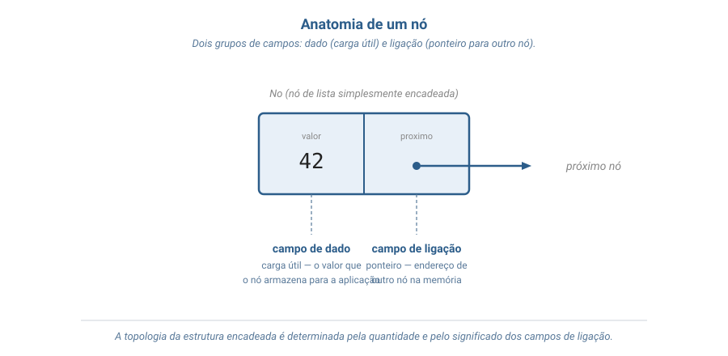
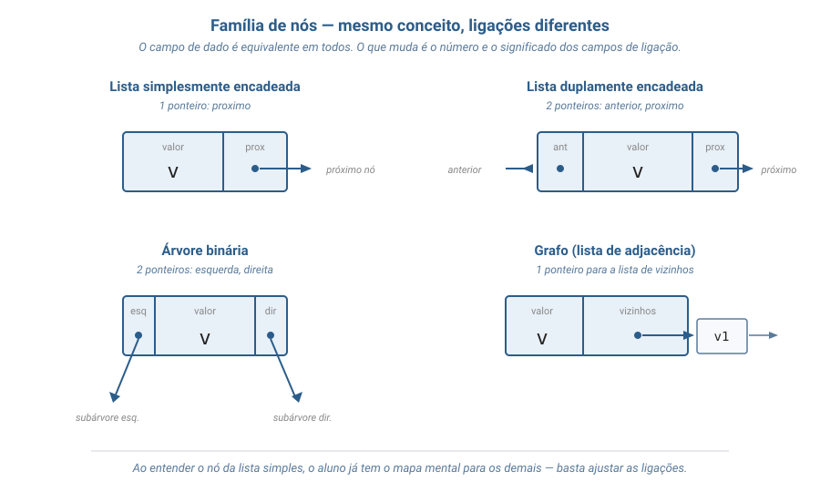
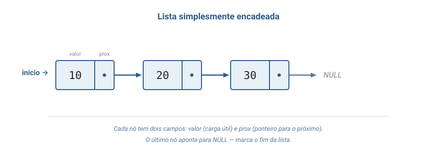
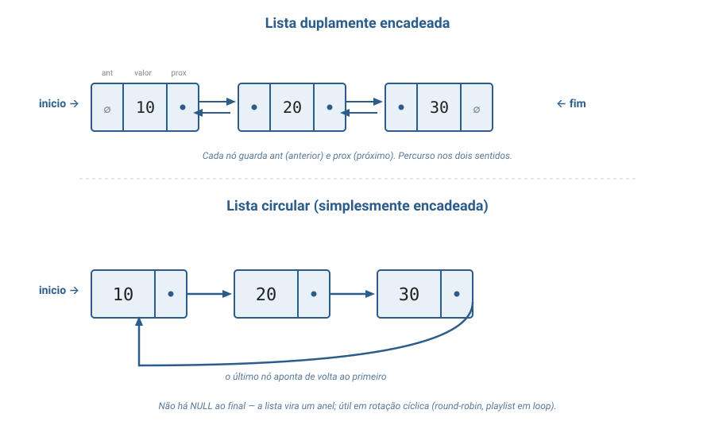
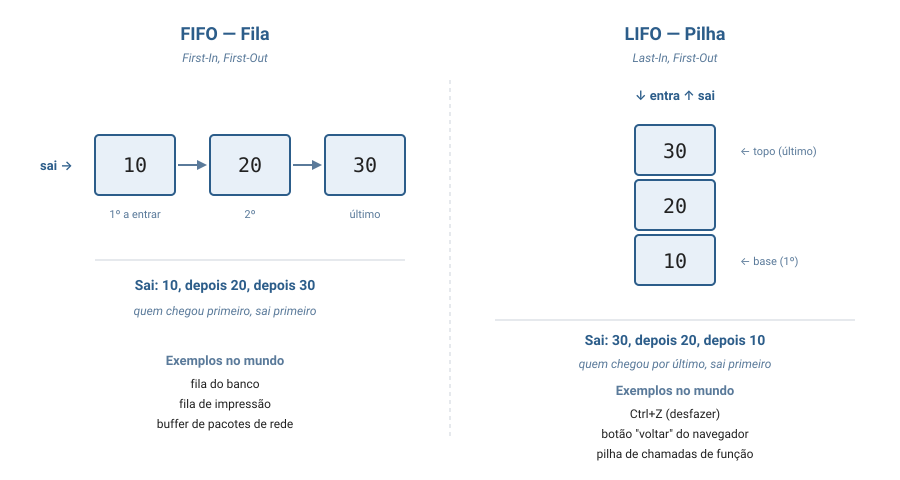

Aula 02
FIFO e LIFO · duplas · circulares
Aula conceitual — apresentamos a família das listas e os padrões de acesso. Implementação em C começa na Aula 03 (Fila).
Bloco 1
Da intuição inicial à definição formal, uma camada por vez.
Camada 1
Você precisa guardar uma sequência que muda o tempo todo: cresce, encolhe, e você não sabe quantos elementos vai ter ao final.
Não dá para reservar um espaço gigante "por garantia". Não dá para correr o risco de ficar sem espaço no meio do caminho.
Solução intuitiva: guarde cada coisa em seu próprio lugarzinho separado, e faça com que cada lugarzinho saiba onde está o próximo.
Essa ideia, formalizada, vira a lista encadeada.
Camada 2
Uma lista encadeada é uma estrutura dinâmica de objetos — chamados nós — organizados em ordem linear.
Cada nó guarda dois campos:
proximo) — onde está o próximo nó.
O último nó guarda NULL no campo de endereço:
"não há próximo".
Tratamento canônico: Tenenbaum, cap. 5; Cormen et al., cap. 10.
Turma, segundo Tenenbaum, uma lista encadeada é uma coleção de elementos onde a ordem é dada não pela posição na memória, mas pelos próprios ponteiros que ligam um nó ao próximo. Tenenbaum, cap. 5 — Listas em C
Para acessar a lista, mantém-se um ponteiro
externo chamado inicio (em inglês, head),
que aponta para o primeiro nó.
Esse ponteiro não é um nó — é o "endereço de entrada".
inicio = NULL.inicio, a lista inteira fica perdida na memória."A ordem está nas ligações, não na vizinhança."
Os nós podem estar espalhados pela memória em endereços completamente distintos — só os ponteiros importam.
Aprofundamento da Camada 2
Lista, pilha, fila, árvore, grafo, tabela hash com encadeamento — todas elas são, no fundo, conjuntos de nós ligados por ponteiros.
Estudar o nó com cuidado é estudar a base sobre a qual quase toda estrutura dinâmica do curso será construída — o mesmo conceito reaparece especializado em cada estrutura nova.
Tratamento canônico: Tenenbaum, cap. 5; Cormen et al., cap. 10.
int, um nome, uma struct inteira).
A quantidade e o significado dos campos de ligação determinam a topologia — e, portanto, o tipo — da estrutura final.


O dado é equivalente em todos. Muda apenas o padrão de ligações.
Turma, ao entender o nó da lista simples vocês já terão boa parte do mapa mental para lista dupla, árvore binária e grafo — basta ajustar o número e o significado dos ponteiros. Esse é o motivo de tantas estruturas serem chamadas, em conjunto, de estruturas baseadas em nó.
Em C, um nó é um typedef struct que contém
um ponteiro para o próprio tipo que está
sendo definido — construção chamada
struct autorreferenciada
(Tenenbaum, cap. 5).
typedef struct No {
int valor;
struct No *proximo; // referência ao próprio tipo
} No;
Dentro da definição, é obrigatório usar o
tag struct No. Trocar por
No *proximo ali dentro não compila:
o typedef só conclui o nome No
no ; final, depois do }.
Fora da definição, struct No *p e
No *p são equivalentes. Implementação concreta:
a partir da Aula 03 (Fila).
Cada nó é criado em tempo de execução por uma chamada a
malloc(sizeof(No)) — malloc =
memory allocation.
malloc reserva uma região do tamanho exato
de um No e devolve o endereço dela.
free.
malloc ao longo da vida.
NULL como fronteira
NULL sinaliza, em qualquer campo de ligação,
"não há nó aqui" — é a
fronteira da estrutura.
proximo = NULL.inicio = NULL.esquerda = NULL e direita = NULL.
Tentar percorrer a partir de NULL é o erro
mais comum em estruturas encadeadas — em geral causa uma
falha de segmentação (segmentation fault).
int (4 B) paga
mais em ligação do que em dado.
Camada 3
NULL.
Variantes tratadas em Tenenbaum, cap. 5; Cormen et al., cap. 10.2.
Decisão ortogonal às variantes estruturais — vale para simples, dupla ou circular.
Escolha guiada pela operação dominante: lista ordenada paga custo na inserção para ganhar na busca.
São políticas de comportamento: descrevem qual elemento sai quando se pede para retirar.
A lista encadeada é uma das representações internas possíveis para Pilha e para Fila.
Tratamento por capítulos próprios em Tenenbaum (cap. 2 — Pilhas; cap. 4 — Filas).
Camada 4
Uma lista simplesmente encadeada L é a tupla:
L = (N, chave, proximo, inicio)
NULL.NULL se a lista está vazia.
Cormen et al. (cap. 10.2): LIST-SEARCH,
LIST-INSERT, LIST-DELETE.
Tenenbaum (cap. 5): nomenclatura equivalente em estilo C.
criar() → L — devolve lista vazia (inicio = NULL).inserir_inicio(L, v) — adiciona nó com chave v no início.remover_inicio(L) → V — pré-cond.: lista não vazia. Devolve a chave do primeiro.buscar(L, v) → N ∪ {NULL} — devolve o primeiro nó com chave = v, ou NULL.vazia(L) → {0, 1} — devolve 1 se inicio = NULL.
A3 caracteriza o comportamento LIFO sobre inserir_inicio:
remover devolve exatamente o que se acabou de inserir.
Para a variante dupla, acrescenta-se anterior: N → N ∪ {NULL} e a âncora fim.
Para a circular, redefine-se proximo(último) = inicio, eliminando NULL.
A notação dá nome preciso a cada parte da estrutura — útil para provar propriedades e para discutir alternativas.
Camada 5
O(...) = "ordem de"; O(1) = tempo constante; O(n) = proporcional a n. Análise canônica: Cormen et al., cap. 10.2; Tenenbaum, cap. 5.
| Operação | Lista simples | Lista dupla | Vetor |
|---|---|---|---|
| Acesso ao primeiro | O(1) | O(1) | O(1) |
| Acesso ao k-ésimo | O(n) | O(n) | O(1) |
| Buscar uma chave | O(n) | O(n) | O(n) |
| Inserir no início | O(1) | O(1) | O(n) |
Inserir no fim (com fim) | O(1) | O(1) | O(1)* |
| Remover o primeiro | O(1) | O(1) | O(n) |
| Remover nó dado o ponteiro | O(n)** | O(1) | O(n) |
| Remover nó dada a chave | O(n) | O(n) | O(n) |
* amortizado.
** simples precisa achar o nó anterior percorrendo desde inicio;
a dupla já o conhece via anterior.
Inserção e remoção são extremamente rápidas quando o local da operação já é conhecido — basta reajustar ponteiros locais.
Quando é preciso buscar o elemento antes, o tempo da busca domina e a operação cai para O(n).
"Deletar o primeiro nó" → O(1).
"Deletar o nó cuja chave é 42" → O(n).
malloc.A escolha entre vetor e lista depende do padrão de uso — não é dogmática.
Camada 6
inicio e fim operada como FIFO;
insere no fim, remove do início.
Turma, esta aula é a base sobre a qual praticamente todas as próximas se apoiam — Pilha, Fila, e até estruturas mais sofisticadas como tabelas hash com tratamento de colisão por encadeamento.
Bloco 2
Estrutura básica → variantes → padrões de acesso.



A estrutura é a mesma — muda a política de acesso.
Bloco 3
Mensagens chegam o tempo todo, são entregues e removidas; o número total varia muito: de 0 a milhares ao longo do dia.
Como armazenar?
Reserva 10.000 posições na inicialização.
realloc)realloc pode copiar tudo para
uma nova região contígua → O(n) que congela o sistema.fim: O(1).É exatamente esse padrão FIFO que filas de impressão, buffers de pacotes e sistemas de mensageria usam. Para LIFO, o exemplo análogo é a pilha de chamadas de função.
Turma, listas encadeadas resolvem problemas como histórico de undo em editores, gerenciamento da fila de processos prontos no kernel do Linux e a própria pilha de chamadas que o C usa para executar funções.
Bloco 4
Entrada da fila = fim (último a chegar).
Saída da fila = início (próximo a ser atendido).
Cada pessoa "aponta" mentalmente para a pessoa da frente — sua referência de "próximo a sair".
Lista simplesmente encadeada operada como FIFO = Fila.
O professor coloca cada prova em cima da última. Ao corrigir, pega a do topo — a última colocada.
A pilha cresce e encolhe pelo mesmo lado. Não há esforço para acessar o meio: você não acessa o meio.
Lista simplesmente encadeada operada como LIFO = Pilha.
Bloco 5
Conceituais — sem programar em C.
Para cada situação, indique simples, dupla ou circular e justifique em 1 linha:
inicio e fim — pontas em O(1).anterior.Decida e justifique em 2 linhas (operação dominante + custo da operação cara em cada alternativa):
malloc + ~80 MB só de ponteiros.Leitura complementar:
A primeira implementação concreta em C: FIFO sobre lista encadeada.